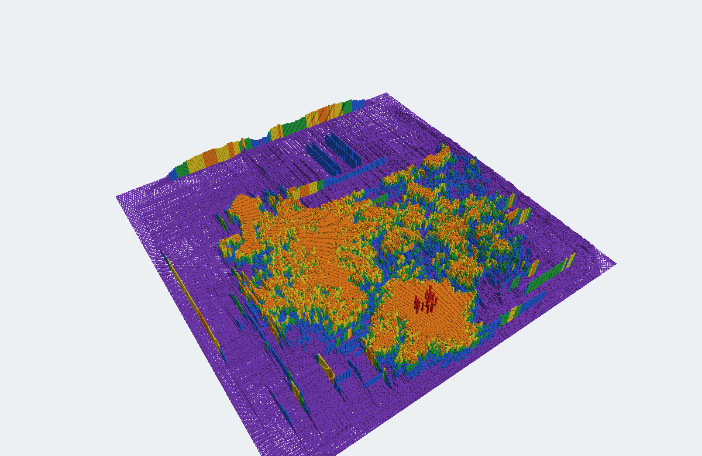
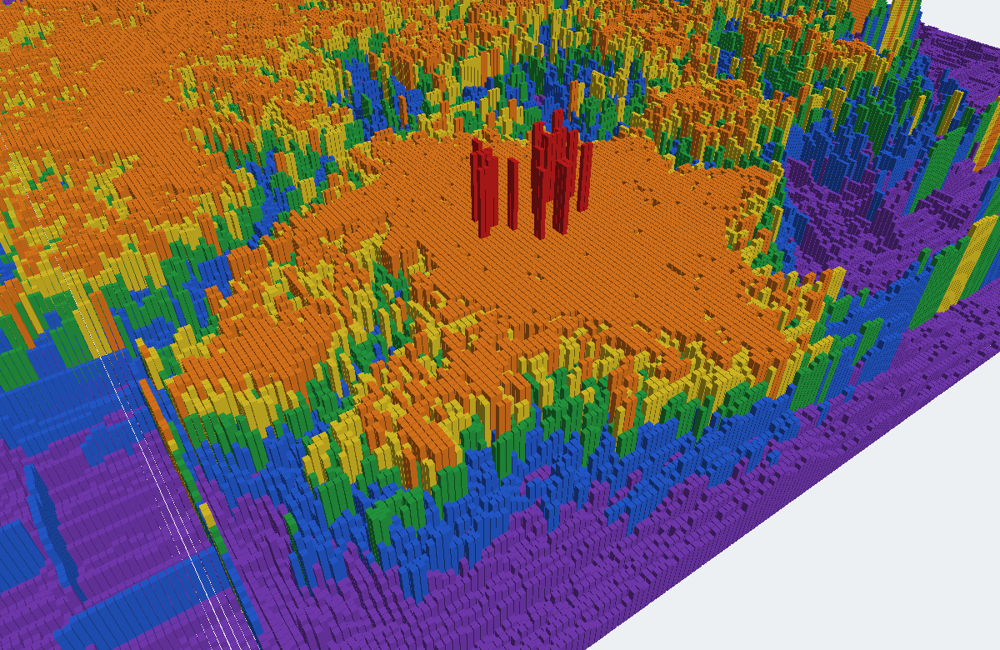
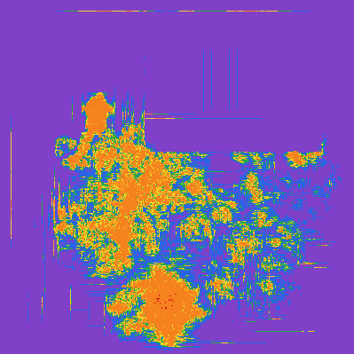
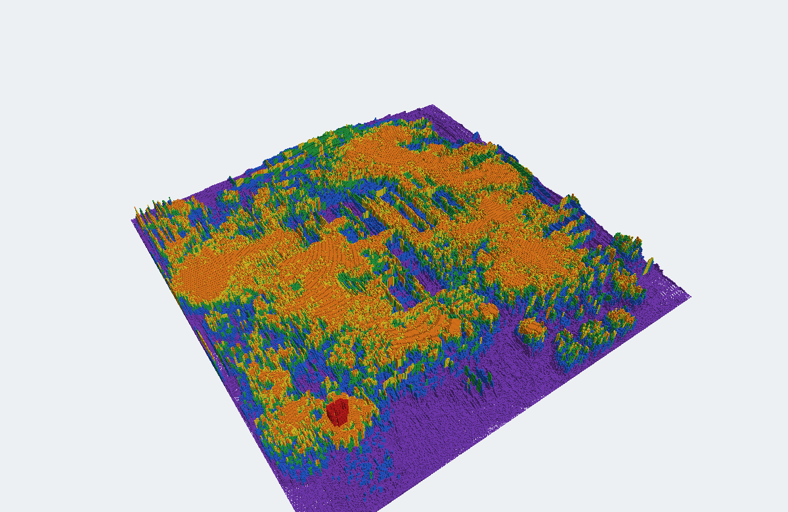
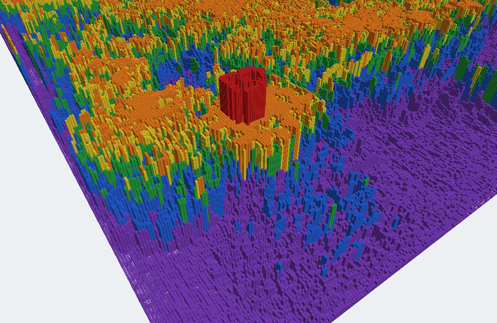
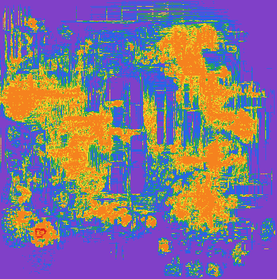

ISPD 2008 · standard configuration (pd23route) · routed results
Congestion Maps
How full each part of the chip is after routing. Every tile is colored by its fullest routing edge, using usage summed over all metal layers against their total capacity, the same 2D measure the router negotiates. In the 3D views each tile is a bar whose height is that usage, so full regions rise as plateaus and overflow pokes above them.
≤ 50%
50–75%
75–90%
90–99%
exactly 100%
over capacity
Turn it in 3D yourself. The views below are snapshots from a Metal viewer on the Mac. To open one and rotate it (drag), zoom (scroll), pan (Shift-drag), change bar height (+/−), hide the cool tiles (H) or toggle the red lift (B):
cd ~/Code/"Global Router"/gr
./grview ~/Code/GlobalRouterRuns/maps/vc8_newblue1.grid newblue1
Red bars are drawn half a full bar taller than their true height so they stand out. Overflow is usually 1–2 units on edges that hold 60–200, so true red bars barely clear the orange.
newblue1
38 overflow399 × 399 tiles
One main hotspot, through-traffic; virtual capacity took it from 48 to 38.
≤ 50%108,805
50–75%17,635
75–90%9,796
90–99%8,633
exactly 100%14,295
over capacity37

Whole chip, 3D

Hotspot close-up, 3D, around tile (180, 60)

Whole chip, top view (1 pixel per tile)Hotspot, top view
newblue4
144 overflow455 × 458 tiles
One pin-bound hotspot; ties the best published result.
≤ 50%73,581
50–75%45,383
75–90%28,861
90–99%24,665
exactly 100%35,781
over capacity119

Whole chip, 3D

Hotspot close-up, 3D, around tile (67, 75)

Whole chip, top view (1 pixel per tile)Hotspot, top view